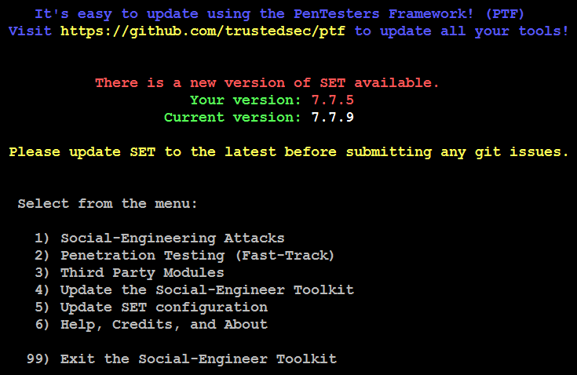
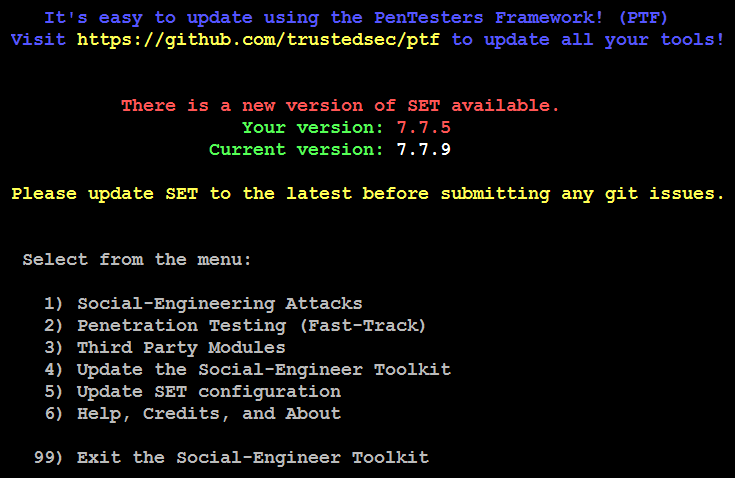

Phishing attacks have become increasingly sophisticated and often transparently mirror the site being targeted,
Phishing attacks have become increasingly sophisticated and often transparently mirror the site being targeted,

TYPES OF SOCIAL ENGINEERS
HACKERS-Software vendors are becoming more skilled at creating soft ware that is hardened.
PENETRATION TESTERS- Penetration testers are people who might have the skills of a malicious black hat but who never use the information for personal gain or harm to the target.
SPIES-: Spies use social engineering as a way of life.
IDENTITY THIEVES- Identity theft is the use of information such as a per son’s name, bank account numbers, address, birth date, and social secu rity number without the owner’s knowledge.
SCAM ARTIST- After an employee has become disgruntled, they often enter into an adversarial relationship with their employer
SALES PEOPLES
EVEN DOCTORS, PSYCHOLOGISTS
PENETRATION TESTERS- Penetration testers are people who might have the skills of a malicious black hat but who never use the information for personal gain or harm to the target.
SPIES-: Spies use social engineering as a way of life.
IDENTITY THIEVES- Identity theft is the use of information such as a per son’s name, bank account numbers, address, birth date, and social secu rity number without the owner’s knowledge.
SCAM ARTIST- After an employee has become disgruntled, they often enter into an adversarial relationship with their employer
SALES PEOPLES
EVEN DOCTORS, PSYCHOLOGISTS
 
